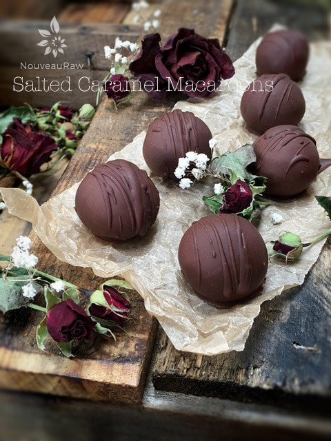
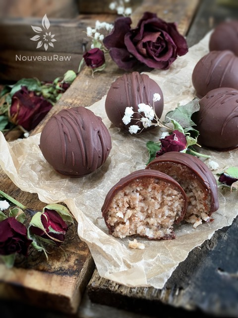

Chocolate Covered Salted Caramel Macaroons
Salted Caramel Macaroons

~ raw, vegan, gluten-free ~
Salted Caramel Macaroons… mmm, don’t those just sound divine. I am sure you have already quickly glanced over this recipe and are trying to figure out where the caramel part comes into play. The secret ingredient that adds to the rich flavor of caramel is the lucuma!
Healthy Alternative Sweetener
Lucuma is considered a healthy alternative sweetener as it lends a sweet taste to recipes but is very low in sugars. It has a distinctively sweet fragrance and full-bodied, maple-like taste. If you can’t find lucuma locally there are many different vendors online where you can order it.
You may question whether or not you can substitute it with another ingredient or leave it out… my answer is… you could but you will lose that caramel note that we are after. If you must sub it out, try maple syrup (not raw), then add the agave in slowly, taste-testing as you go. You may not need as much.
The texture is a wonderfully chewy, moist macaroon ball and if you choose too… it will be enrobed with a divine raw chocolate.
I have provided two different options below on how you can make this sweet treat. First of all, you can make plain ole’ macaroons. Plain ole”! Sheesh! There is nothing plain about the rich flavor of this raw macaroon. If you decide to go this route, you will drop the batter on dehydrator sheets and dry them for up to 15+ hours. This will give the macaroons a firm exterior. They are deliciously wonderful.
Another option which doesn’t require any dehydration of the macaroon… is to roll the batter into balls, freeze them, then dip in a raw chocolate bath. You won’t be disappointed regardless of the route you decide to take. In fact, since this recipe yields 34 treats, you do half as a plain macaroon, and the other half dipped in chocolate. Two desserts in one! I hope you enjoy this recipe. Please comment below and have a blessed day, amie sue
Yields 34 (1 Tbsp) each cookie
Coating (optional):
Preparation:
Straight macaroons:
- In the food processor, fitted with the “S” blade, grind the pecans and salt down to a fine of a texture as possible.
- Add the coconut and lucuma powder. Pulse together.
- Add the sweetener, coconut butter, and vanilla. Process until the batter sticks together when pressed.
- Drop dough by rounded tablespoon onto mesh dehydrator screen. I used my small cookie scoop.
- Dehydrate at 145 degrees (F) for 1 hour, then reduce to 115 degrees (F) for up to 24 hours.
- Store in air-tight containers. These will freeze well for those last-minute engagements.
Chocolate covered macaroons:
- In the food processor, fitted with the “S” blade, grind the pecans and salt down to as fine of a texture as possible.
- Add the coconut and lucuma powder. Pulse together.
- Add the sweetener, coconut butter, and vanilla. Process until the batter sticks together when pressed.
- Using a 1 Tbsp sized cookie scoop, scoop out the batter and roll it in the palms of your hands, creating a ball.
- Place on a cookie sheet and freeze while you make the chocolate.
- By freezing them, it will cause the coating to set up quicker, allowing you to double-dip them for a thicker coat.
- Once the chocolate is made, remove the macaroon balls, dipping them one at a time into the chocolate.
- You will want to work at a steady pace because the cold macaroons will continually start to cool down the dipping chocolate. If it gets too thick, you won’t be able to dunk the balls in there.
- Place on parchment paper until dry. Sprinkle coarse sea salt on top (I forgot) and/or drizzle extra chocolate over the macaroon.
- Allow to dry completely either at room temp or in the fridge if the ambient air is too warm where you live.
- Enjoy within a week’s time.
Culinary Explanations:
- Why do I start the dehydrator at 145 degrees (F)? Click (here) to learn the reason behind this.
- When working with fresh ingredients it is important to taste test as you build a recipe. Learn why (here).
- Don’t own a dehydrator? Learn how to use your oven (here). I do however truly believe that it is a worthwhile investment. Click (here) to learn what I use.

© AmieSue.com